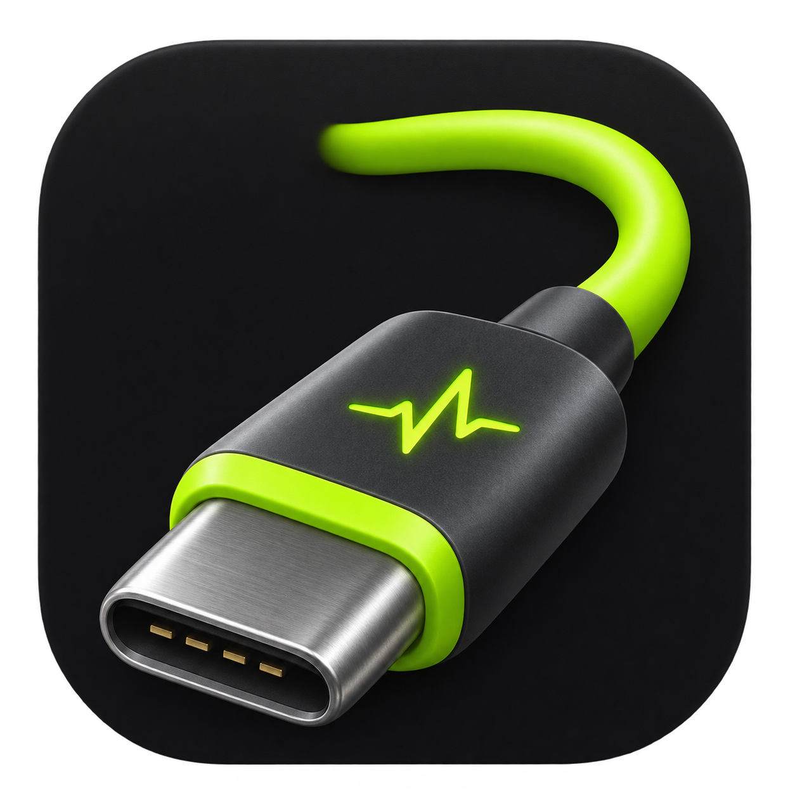
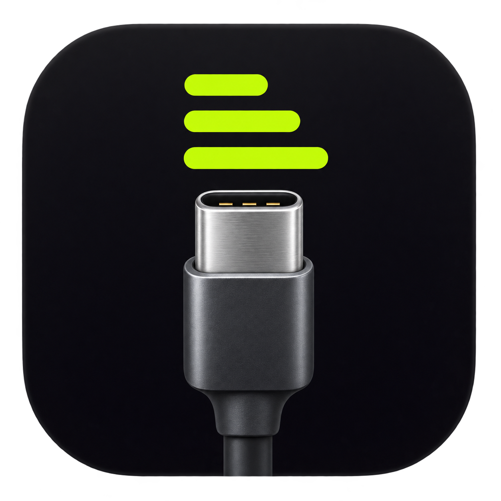

Ideas to mix and match, not either-or. UI tweaks are shown in today's theme. The themes are new, built from the app icon colors: black, lime, charcoal and steel. Click ♡ on the ones you like, then "Copy my picks" at the bottom.
The result after both ends are plugged in.


The saved-cables table.
All of these play on a loop.